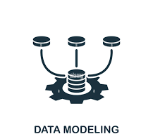

Analyse de la performance aérienne : des vols aux insights
Transformer les données opérationnelles en décisions stratégiques pour l’aviation
Résumé principal
Dans un secteur aérien hautement concurrentiel, la gestion de la performance basée sur la
donnée constitue désormais un avantage stratégique. Ce projet a été conçu pour offrir une
plateforme analytique unifiée permettant aux dirigeants et aux analystes de suivre en
temps réel l’efficacité opérationnelle, la rentabilité et le comportement des passagers.
Grâce à une architecture data solide construite en SQL et à des modèles analytiques avancés,
Airline Performance Analytics fournit des insights clairs et actionnables qui soutiennent les
décisions stratégiques, financières et opérationnelles.
Problématique business
Les compagnies aériennes doivent constamment trouver l’équilibre entre rentabilité, efficacité opérationnelle et satisfaction client. Les décideurs ont besoin d’insights fiables et accessibles pour répondre à des questions telles que :
- Quelles lignes et quels appareils génèrent les marges les plus élevées ?
- Quel est l’impact des retards et annulations sur le revenu et sur la perception de la marque ?
- Quels segments de passagers contribuent le plus à la rentabilité et à la fidélité ?
La solution : un système centralisé, prêt pour l’analytics, qui intègre l’ensemble des flux de données opérationnelles, garantit leur qualité et leur cohérence, et fournit des KPIs directement exploitables par les décideurs stratégiques.
Aperçu de la solution
L'initiative a été structurée autour de trois modules complémentaires
- Revenge of the Seat (Data Warehouse)
- Return of the Jet High (Analytics Engine) et
- The Rise of the Single Source (Analytics Engineering)
chacun apportant une couche spécifique de valeur métier pour former un écosystème complet d'intelligence aérienne.
Ensemble, ils offrent une architecture de bout en bout robuste qui consolide les données opérationnelles et les transforme
en insights exploitables pour la prise de décision stratégique.
| Module | Description | Valeur |
|---|---|---|
Revenge of the Seat (Data Warehouse) | Un data warehouse relationnel entièrement normalisé, conçu selon la méthodologie Merise et intégrant vols, appareils, passagers et réservations avec une intégrité référentielle stricte. | Établit une source unique de vérité pour toutes les données opérationnelles et financières, permettant un reporting fiable, la conformité et un alignement inter-départements. |
Return of the Jet High (Analytics Engine) | Une couche analytique SQL fournissant des KPIs sur la rentabilité des routes, l’utilisation de la flotte, la performance des retards et la segmentation des passagers. | Transforme les métriques opérationnelles brutes en insights actionnables guidant les décisions de tarification, de planification et d’optimisation stratégique. |
The Rise of the Single Source (Analytics Engineering) | Une couche de transformation moderne utilisant dbt, automatisant la modélisation de données complexes tout en imposant des tests de qualité rigoureux et une documentation complète. | Garantit la fiabilité et la certification des données. Fournit un cadre évolutif pour industrialiser les KPIs et garantir que les décideurs travaillent avec des données de confiance vérifiées. |
En combinant ces modules, la plateforme comble le fossé entre les opérations de
données et la stratégie d'entreprise, permettant aux dirigeants de suivre la
performance, d'identifier des opportunités et de prendre des décisions plus
rapides basées sur des preuves.
Le résultat est un écosystème de données de bout en bout qui transforme les
données de vol en intelligence stratégique, garantissant aux décideurs l'accès
aux informations dont ils ont besoin, au moment où ils en ont besoin.
Impact business
- Vue à 360° : des opérations, de la performance financière et des comportements clients.
- Analyses de rentabilité : par ligne, flotte et marché pour guider les décisions de pricing.
- Analyse détaillée des retards : permettant de mesurer les coûts directs, indirects et l’impact opérationnel.
- Intelligence client : au service de la fidélisation, du revenu premium et de la segmentation avancée.
- Dashboards stratégiques : conçus pour les dirigeants et alignés sur les KPIs clés.
- Confiance et Certification des Données : Plus de 60 tests de qualité automatisés garantissant l'exactitude des rapports financiers et opérationnels.
La plateforme donne aux équipes dirigeantes les moyens de :
- Prioriser les routes à forte marge et optimiser celles qui sous-performent.
- Anticiper les risques opérationnels affectant la ponctualité et la qualité de service.
- Renforcer les stratégies de pricing et de planification des capacités basées sur la donnée.
Insights clés
L'analyse suivante compare les principaux transporteurs internationaux sur la
base d'indicateurs clés de performance (KPIs) agrégés, calculés au sein de
l'Analytics Engine.
Chaque indicateur permet d'évaluer à la fois l'efficacité opérationnelle et
la performance financière, offrant ainsi une vue d'ensemble de la génération
de revenus, de la gestion des retards et de la fiabilité.
| Compagnie aérienne | Total des vols | Total des passagers | Revenu total | Revenu moyen par vol (€) | Revenu moyen par passager (€) | Retard moyen (min) | Taux de ponctualité (%) | Taux d’annulation (%) |
|---|---|---|---|---|---|---|---|---|
| Air France | 2,556 | 529,002 | 328M | 134,261.63 | 620.55 | 36.97 | 71.25 | 4.34 |
| All Nippon Airways | 2,503 | 510,151 | 322M | 134,489.43 | 632.44 | 35.88 | 69.95 | 4.16 |
| American Airlines | 2,505 | 501,859 | 315M | 132,274.81 | 628.88 | 36.70 | 70.54 | 4.75 |
| British Airways | 2,354 | 485,613 | 304M | 135,445.22 | 626.72 | 41.78 | 67.20 | 4.55 |
| Delta Air Lines | 2,475 | 507,290 | 326M | 137,979.24 | 643.26 | 34.91 | 71.21 | 4.44 |
| Emirates | 2,466 | 499,900 | 321M | 135,602.87 | 642.89 | 38.38 | 69.54 | 3.89 |
| Lufthansa | 2,506 | 507,665 | 319M | 133,105.63 | 629.26 | 35.75 | 70.63 | 4.23 |
| Qatar Airways | 2,571 | 520,505 | 324M | 132,672.56 | 623.21 | 34.91 | 69.90 | 4.90 |
| Singapore Airlines | 2,523 | 514,213 | 327M | 137,167.32 | 636.20 | 37.23 | 70.23 | 5.47 |
| United Airlines | 2,541 | 525,440 | 324M | 133,871.03 | 618.35 | 38.77 | 70.17 | 4.49 |
| Rebel Alliance | 1 | 7 | 15,000.00 | 15,000.00 | 2,142.86 | 0.00 | 100.00 | 0.00 |
- Delta Air Lines enregistre le revenu moyen par vol le plus élevé (€137 979), indiquant une forte performance sur des routes à haut rendement.
- Air France domine en revenu total et en volume de passagers, confirmant son rôle de hub majeur en Europe.
- Air France présente également le meilleur taux de ponctualité (71,25 %), tandis que British Airways — malgré une bonne gestion des retards — affiche une rentabilité des routes légèrement inférieure à celle de Delta.
- Le taux global d’annulation reste inférieur à 5 %, témoignant d’une stabilité réseau solide pour la plupart des transporteurs.
- Au global, les compagnies parvenant à équilibrer contrôle des retards et rendement passager (notamment Delta et Air France) surpassent leurs concurrentes en efficacité financière.
Ces insights apportent un soutien décisif aux dirigeants pour optimiser les routes, déployer la flotte et affiner les stratégies de tarification — illustrant la capacité de la plateforme à convertir les données opérationnelles en intelligence stratégique à grande échelle.
Technologies utilisées


- 
Prochaine étape
- Mise en place de pipelines d’ingestion temps réel pour des KPIs continuellement actualisés et un monitoring opérationnel quasi temps réel.
- Création de modèles prédictifs avancés pour anticiper la demande, prévoir les retards et gérer les perturbations.
- Déploiement de tableaux de bord Power BI exécutifs, intégrant les insights financiers, opérationnels et clients pour soutenir les décisions stratégiques.
- Élargissement du framework analytique aux alliances et partenaires afin d’offrir un benchmarking transverse entre compagnies.
- Intégration de mécanismes DCL et TCL pour améliorer la gouvernance, la sécurité, le contrôle d’accès et la cohérence transactionnelle du système.
Synthèse
Airline Performance Analytics démontre la manière dont les données opérationnelles peuvent devenir un levier majeur de performance stratégique et financière. Grâce à une gouvernance robuste, à des analyses SQL avancées et à des KPIs orientés métier, la plateforme permet aux compagnies aériennes de :
- Améliorer leurs revenus et leur efficacité opérationnelle.
- Identifier et anticiper proactivement les risques.
- Prendre des décisions éclairées et basées sur les données, en s'appuyant sur une Source Unique de Vérité certifiée.
Car dans l’aviation, comme dans la data, la performance ne se limite pas à voler, elle consiste à savoir où et comment s’élever.
Galerie